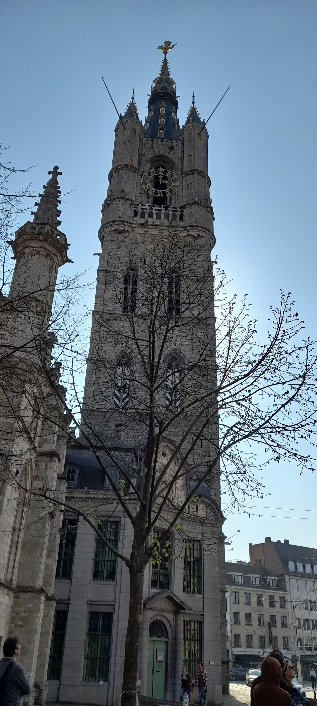

DESTINO
Debes tener en cuenta que de acuerdo al destino que tomarás y la estación en la que viajarás, tus opciones serán diferentes.
Aquí solo te puedo contar sobre los destinos que yo tomé, y cuales fueron mis experiencias. Pero igual hay muchos sitios en los que puedes encontrar recomendaciones que serán útiles al momento de viajar.
Lo primero que debes hacer es perder el miedo, he conocido mucha gente que siempre me dice "¿no te da miedo viajar sola?", obvio que mi respuesta es un rotundo no. Pero para eso, planeo mis viajes al detalle. Espero que con este sitio pueda darte consejos que sean valiosos.
EUROPA
ESPAÑA
MADRID
Es una ciudad que tiene un lugar muy especial en mi corazón, ya que es la primera que visité y es la que me sacó la mayoría de los miedos.
En mi primer viaje conocí personas increíbles, con las que todavía mantengo contacto.
Y fue la primera que elegí por el idioma, ya que no quería complicarme tanto, al ser mi primer viaje.
BARCELONA

Enamorada de la ciudad de los dragones y laberintos, Barcelona es hermosa donde se la mire. La fiesta de su pequeña playa, el colorido paseo por la Barceloneta, los sabores del mercado La Boquería y las hermosas obras de Gaudí llenan esta ciudad de toques únicos. La calidez de su gente te hacen sentir en casa.
Si viajás para conocer algún estadio de fútbol, los vas a encontrar muy fácil, las estaciones de subte que llegan al estadio tienen el nombre del mismo, entonces si quieres conocer el Camp Nou, te bajás del subte en la estación con dicho nombre y luego sigues todas las indicaciones que hay en la calle.
TOLEDO
Esta pequeña ciudad Española fue un día capital de este país. Puedes hacer un tour de un día y conocerla completa, sus calles son tan estrechas que cuando pasa un vehículo debes pegarte a la pared, para que no te lleven por delante.
Tiene una iglesia con una historia muy particular, la campana de la torre es tan grande y pesada que cuando la subieron se dieron cuenta que era más grande que el habitáculo en donde estaría alojada, decidieron demoler la campanario y construírlo al rededor de la campana, pero esta se rompió al poco tiempo, y desde entonces no se ha podido reparar, eso fue un error de cálculo.En su fachada principal se encuentran esculturas de diferentes papas, y la escena de la última cena. Debido a la antiguedad de esta iglesia, notaron que se empezó a hundir un lado, por lo que la reforzaron para que se mantuviera en pie. Si quieres pedir un turno para casarte en ella, debes esperar al menos ¡2 años!.
GRECIA
ATENAS

Un lugar con muchisima historia y reflexión. De aquí salieron excelentes filósofos, matemáticos, etc. Si subís hasta el Partenon tendrás una increíble vista de la capital, con semejante paisaje de fondo no queda otra que reflexionar de la vida y el más allá. Pero luego de ponerte filosófico te vas a pasear por sus pequeñas callecitas, algunas muy coloridas en el barrio de Plaka.
Si queres comprar souvenires, ropa, accesorios y otros, no te pierdas el Mercado de Pulgas de Monastiraki.
Por la excelente ubicación te recomiendo que te alojes en Pella Inn, tiene una vista increíble y está a pocas cuadras de la Plaza princpal y de muchas otras atracciones.
ISLA DE CEFALONIA
En esta isla situada al oeste de Grecia nació mi abuelo, y es por eso que me dirigí a ella. Desde que soy chica siempre trataba de ubicar este pedazo de tierra en todos los mapas, ya que sabía que ahí estaba mi origen. Es una isla pequeña, rodeada de aguas turquesa. Tranquila y silenciosa. Con unas vistas de ensueño, realmente dignas de admirar.
REINO UNIDO
LONDRES
Moderna e imponente, un perfecto equilibrio de castillos, parques y edificios modernos. Historias de traición, amor y desamor, que te vas a ir enterando cuando vayas haciendo los tours.... y también un toque de magia si no nos olvidamos de Harry Potter. Una ciudad llena de parques en los que los locales hacen picnic cuando hay algo de sol.
En algunos museos, no se paga entrada, sólo una contribución. Adentro encontrás cafeterías, locales de souvenires y ropa.
Un punto estratégico para conocer varios lugares a la vez es el Parlamento, ya que encontrarás este edificio, al lado el famoso Big Ben y cruzando la calle la Abadía de Westminster, donde se encuentran enterrados personajes de la historia muy famosos.
PAÍSES BAJOS
AMSTERDAM
La ciudad de los canales te invita a recorrer caminando o en bicicleta sus estrechas calles. Queda pequeña para la cantidad de turistas que visitan Amsterdam, ya sea que vayas por los museos, los paseos en barco, o en bici o por los tulipanes, no hay nada que se compare con este lugar.
El Castillo de la familia Real, para sorpresa, no tiene rejas y no parece un edificio para nada monumental, si no lo estás buscando concientemente lo pasarás inadvertido. Al lado está la Iglesia donde se casaron los actuales reyes.
Si extrañás la carne argentina, encontrarás varios restaurant que ofrecen asado u otros cortes conocidos.
ROTTERDAM
No puedes dejar Rotterdam si no pasás por su conocido Markthal, en donde encontrarás una gran variedad de comidas, personas y curiosidades.
Y luego de llenar el estómago, debes sacarte una foto en el rincón de selfies, para demostrarles a todos que estuviste ahí.
Se reconstruyó casi íntegramente luego de las guerras, por lo que verás muchos edificios modernos, como las Casas Cubo, el Museo Kunsthal, La Eerminal Central la Torre Euromast y tampoco te pierdas el Puente Erasmus, parecido a un cisne.
Advertencia, mirá para todos lados cuando camines por la gran cantidad de ciclistas.
Y un consejo, si estás dispuesto a probar todo, intentá con la "croquet", por lo que me comentaron tiene de todo (carne de vaca, pollo, pescado y otros) lo que le da un gusto muy particular, al que todavía no le pude encontrar el gusto.
LA HAYA
Tranquila como las aguas de sus playas, La Haya te permite disfrutar de sus veredas anchas y sus obras de arte callejero, ni necesitarás ir a un museo porque puedes admirar magníficas esculturas en la calle.
Para conocer tenés el Museo Mauritshuis (donde encontrarás obras de Rembrandt, Rubens y Vermeer entre otros), el Castillo de Bienhoff (actual Parlamento) atrás de este el Manantial de la Corte. Un emblema de esta ciudad es el Palacio dela Paz que alberga el Tribunal Internacional de Justicia, donde se deciden disputas entre países. Paseando por el centro encontrarás la Galería Comercial más antigua de este país De Passage, que está totalmente techada.
BELGICA
BRUSELAS
Recién te comenté de una galería techada, pero en esta ciudad encontrarás la primera de Europa, todavía se mantiene en pie y podés recorrerla.
De Bruselas seguro te irás con unos kilos de más, tanto porque en la valija llevarán souvenires para la familia, pero también por la esquisitez de sus comidas típicas, una de ellas, los waffles y otra las papa fritas (que aunque no lo creas, se crearon aquí), te preguntarás ¿que tienen de único?. Sólo te puedo decir, ¡ve a probarlos!.
Las iglesias en este país no las subenciona el estado, entonces deben encontrar la forma de recaudar para el mantenimiento, para ello alquilan el espacio para reuniones, exposiciones, etc. Lo más raro que escuche era que en la Iglesia del Sagrado Corazón de Jesús los sábados a la noche había show de Drag Queen y los domingos a la mañana la misa.
Bruselas tiene una gran diversidad de culturas y razas, para moverte por aquí necesitarás saber un poco de francés, auque también encontrarás quienes hablen un español decente.
GANTE

A diferencia de muchos lugares, a Gante no le molesta romper las reglas, se le llama la indomable, porque aún sabiendo que podían perder el título de Patrimonio Mundial de la Unesco, contruyeron un granero moderno para reuniones multitudinarias casi al lado de su Iglesia más emblemática.
¿Qué es famoso aquí? La cerveza y una gomita en forma de cono que es dura por fuera pero jugosa por dentro.
BRUJAS
Encantada y a la vez maldita por la historia que rodea esta ciudad.
Conocida por la Universidad Colegio de Europa, que le asegura a sus alumnos un puesto en las mejores instituciones del mundo, esta ciudad elit te invita a volver el tiempo atrás.
Si bien en español se tradujo como Brujas, en realidad viene del francés "Brugges" que significa "canales", y estos canales le dan un toque especial.
La historia que rodea esta ciudad es de mujeres muy avanzadas para la época, luego de las guerras aprendieron varios oficios y se solventaron solas, se dieron cuenta que no necesitaban marido ni un padre para subsistir. Un gran ejemplo para la época, pero claro, la historia también las condenó, se las acusó de brujerías y otras cosas.
No te podés ir sin comer o comprar kilos y kilos de sus famosos chocolates. Según lo que dicen, los mejores del mundo.
ALEMANIA
BERLIN

Berlín es una lugar que está en la memoria de todos, por muchos motivos, pero en especial por la llamada "Guerra Fría" de la que todavía se ven vestigios. Por ejemplo el "Checkpoint Charly", que fue el más famoso de los puestos fronterizos del Muro de Berlín.
FRANKFURT

Frankfurt es la capital económica de la Eurozona. Pero combina a la perfección los grandes bancos y compañías con sus antiguos edificios, como los del ayuntamiento llamado Der Römer, que parecen viejas casitas apareadas una al lado de la otra, pero por dentro, debido a las constantes appliaciones y remodelaciones se convirtió en un laberinto que ya no conservan su estructura inicial.
ASIA
COREA DEL SUR
SEUL
La calidez de su gente y la variedad de su gastronomía te hacen enamorarte de este rincón de Asia.
Es considerada una ciudad segura por lo que puedes pasear por sus calles a cualquier hora.
Algunos museos son gratis y otros algunos días de la semana, o tienen entradas accesibles.
Desde el 2022 la Casa Azul, antes la casa del Presidente, tiene acceso al público, ya que el actual mandatario decidió cambiar su lugar de residencia.
Las tiendas de conveniencia abiertas las 24 hs son un gran alivio si te olvidaste de comprar algo, desde cargadores, ropa (remera) o ropa interior, bebidas, comidas, paraguas, descartables, postres, algunas frutas y hasta velas, equipados con microonda donde podés calentar la comida que compres, dispenser de agua fría y caliente para preparar los famosos ramen instantáneos y unas mesas y sillas para alimentarte. La comida es variada, barata, fresca y de muy buena calidad.
Los baños públicos siempre están muy limpios y no cobran nada.
JEJU
Esta ísla volcánica te llena de energías, sus milenarios conocimientos y sus comidas exóticas no dejarán que te aburras.
Es muy conocida por sus cítricos, por lo que encontrarás varias comidas en las que se incluyen estos ingredientes.
Si sos futbolero sabrás que fue una de las sedes del Mundial Corea-Japón 2002, por lo que podés encontrar el estadio.
GIEONGJU
La antigua capital del reino de Silla tiene para ofrecer hermosas historias, llenas de intrincados pasajes de lo que fue alguna vez un gran imperio coreano.
Aquí se encuentra el observatorio de estrellas más antiguo de Asia, contruído con 365 piedras.
Tambien encontrarás una pequeña ciudad que se mantiene intacta desde hace siglos, por lo que recorrer sus calles te harán volver al pasado, realmente una gran experiencia.
BUSAN
Si te gusta caminar y visitar templos con mucha historia, Busán es tu lugar. Esta ciudad con clima cálido, playas limpias y varios templos budistas, es un lugar excelente para caminar, meditar, pasar una tarde tranquila y a la noche admirar las luces de sus grandes edificios.
Si te gustan los mariscos, estarás en el cielo, ya que encontrarás una gran variedad. Muchos restaurantes tienen grandes peceras en los que están los productos que luego te cocinarán. Aquí se realiza el festival de Cine Internacional de Busan, muy popular últimemente.
JAPÓN
TOKIO
Esta multitudinaria ciudad tiene una mezcla de lo ultramoderno y lo tradicional, las mujeres vestidas con sus Yukatas te descolocan un poco. Todavía se conservan muchas tradiciones, y a muchos extranjeros les puede parecer difícil moverse, ya que muchas costumbres nuestras son falta de modales. Así que antes de viajar, por respeto, trata de leer o ver videos sobre lo que puedes hacer y que no. En especial si no quieres tener problemas con la ley.